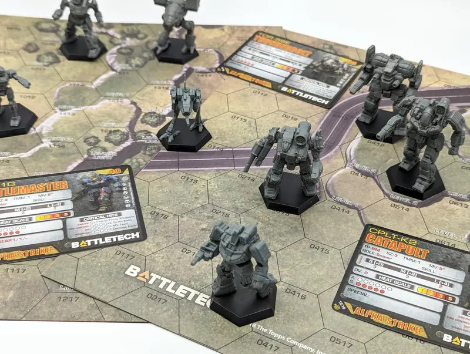

Lance Builder Update: Here's What Changed
The Lance Command Console has been through a significant overhaul. If you used the old version, here's what's different and why.
The short version: it went from a proof-of-concept with a hardcoded list of maybe 50 'Mechs to a proper tool covering the full published BattleTech roster. Here's the full breakdown.
620 Chassis. 3,700+ Variants.
The old builder had a handful of hardcoded 'Mechs. The new one pulls from a database built by parsing every MegaMek MTF file and cross-referencing it against the Master Unit List API — every chassis, every variant, with accurate Battle Values and Point Values pulled directly from official sources.
That's every canon BattleMech from the Mackie in 2439 through to thirty-second century designs. If it's in MegaMek, it's in the builder.
Rewritten Fluff for Every 'Mech
Every chassis now has three fields of descriptive text — overview, capabilities, and deployment notes — written in a consistent MechTech field-report voice. Think a senior technician briefing you before an assignment: practical, opinionated, and specific about what matters for keeping the machine running and using it effectively.
The entries for chassis A through roughly M were rewritten by hand in that voice. The rest were processed through a local AI model (Ollama running on my machine, no cloud costs) and then cleaned and audited for consistency. Hit the info button on any 'Mech to read them.
Faction Availability Filter
Select a faction — any of the five Great Houses, all the major Clans, ComStar, Word of Blake, Periphery states, mercenaries — and the chassis list filters to only show 'Mechs available to that faction. The availability data comes from the Master Unit List, so it reflects actual canon availability by era rather than being guessed.
Great Houses. Clans. Inner Sphere States. Periphery. It's all there.
Era Filter
Filter by era — Age of War, Star League, Succession Wars, Clan Invasion, Civil War, Jihad, Dark Age, ilClan — and the database filters to era-appropriate 'Mechs. Combine with the faction filter and you can build a historically accurate 3025 Smoke Jaguar raiding force or a proper 3067 ComStar garrison without having to know every chassis by heart.
Classic BV and Alpha Strike PV
Toggle between Classic BattleTech Battle Value and Alpha Strike Point Value. The BV calculator applies the standard skill-adjusted formula — base BV modified by your pilot's gunnery and piloting ratings. The total tracks in real time as you build.
Set a BV or PV ceiling and the builder enforces it as you add units.
Pilot Skill and Background
Each unit in your roster has adjustable gunnery and piloting ratings that feed into the BV calculation. There's also a pilot background selector — Former House Regular, MechWarrior Dropout, ComStar Adept, Clan Freeborn, and others — that's purely flavour but useful if you're running a campaign or building a narrative force.
Quick-Gen Lance
One button generates a complete four-unit lance within your current filters and BV limit. It tries to produce a tactically balanced result — not just four random 'Mechs — with role variety and no duplicate chassis. If you have a faction filter active it respects that. Useful for getting a starting point that you then adjust, or for quickly generating an opponent force.
'Mech Info Panel
The info button on any variant opens a panel with the full stats — weapons list, heat sinks, movement, armour — plus the overview, capabilities, and deployment notes. Faction availability badges show which factions can field that specific variant. If you're not sure whether a 'Mech fits your force or how it should be used, this is where to look.
Save, Export, and Print
Save lances to your browser's local storage and reload them later. Copy the roster to clipboard for pasting into a document or Discord message. Export to CSV if you're tracking a campaign in a spreadsheet. Print a text roster sheet formatted for the table.
What's Still On the List
A few things I want to improve:
- The Ollama fluff voice — the later alphabet chassis (N through Z) were processed by the local AI and are noticeably more generic than the hand-written entries. A second pass is planned.
- Vehicle and infantry support — the current builder is 'Mech-only. Adding vehicles and infantry for proper combined arms lances is the next significant feature.
- Campaign tracking — persistent pilot records, salvage tracking, and repair costs between scenarios.
- Mobile layout — it works on mobile but the two-column layout is cramped on small screens. A proper mobile layout is overdue.
If something's wrong, missing, or if a specific 'Mech has bad data — let me know. The database was built programmatically and while I've audited it, there are 3,700 variants. Things get missed.
Try it: Open the Lance Command Console →